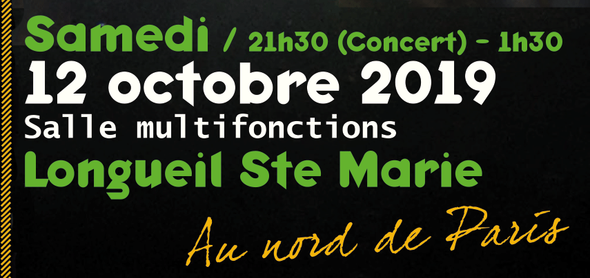

|  |
Un évenement
|
Des jeunes qui aiment Jésus, des parents qui aiment Jésus... des familles qui aiment Jésus. Bref, des amis qui s'associent dans la joie de la transfiguration pour vous proposer des événements entre Ciel et Terre.
Fondée au cours de l'année 2018 par deux familles, cette association oeuvre pour le ressourcement spirituel et familial. Elle s'articule tout au long de l'année autour de différentes propositions, dont le souhait principal est d'harmoniser les dimensions spirituelles et humaines de nos vies. Seul ou en famille, cette association vous invite par des temps de louange à anticiper la joie de la fête éternelle, par des temps d'enseignement à vous émerveiller de vos vies, et par des temps fraternels à vous embellir mutuellement !
Mont Thabor, c'est la manifestation de la tendresse du Père.
Mont Thabor, c'est l'expression du "bon d'être entre frères".
Mont Thabor, c'est la montagne où l'unité se fait dans la lumière.
Depuis deux années, dans le cadre du Centre Chrétien Œcuménique de Gagnières, Mont Thabor organise un camp spirituel de 6 jours, ouvert à tous. Une semaine idéale pour de nouvelles rencontres ou des retrouvailles dans un cadre décontracté et ambiancé au coeur des Cévennes. Ces quelques jours sont ponctués par de nombreuses activités spirituelles, sportives et artistiques, proposant des lieux d'expression et de découvertes adaptés pour chacun. La joie de la fraternité est au rendez vous entre les randonnées, les sorties en kayak, les nuits à la belle étoile et les baignades !
Anne et Alain Merlo, ayant un ministère auprès des couples et des familles, interviennent tout au long de la semaine. Ils proposent des temps d'enseignements en plénières, des ateliers spécifiques mais aussi un accompagnement particulier.
Le 12 octobre 2019, Mont Thabor vous invite à un événement immanquable : une "christotheque" mixée par le DJ Padre ! Tu connais le DJ Padre ? Un homme qui, des platines à la soutane, n'a pas perdu le rythme. Il sait sur quel pied te faire danser ! Une Christotheque ? c'est une soirée où tu danses, une soirée où tu chantes, une soirée où tu ris, une soirée pour le Christ entre l'électro, le pop, le techno et le rap ! Le 12 octobre, c'est une soirée mixée pour louer :) N'hésites pas, la fête t'attends ! Sois le bienvenu et invite largement.
Le 12 octobre, c'est aussi une journée de formation ouverte à tous. Le thème ? l'intercession.
Anne Lemaitre, laïque catholique diplômée en études bibliques et en langues bibliques de l'Institut catholique de Paris, interviendra lors de cette journée. Elle est actuellement responsable du mouvement France-Intercession, elle est également l'auteur du livre Intercession Prophétique, ed des Béatitudes.
Un mot qui peut vous parler et/ou vous donner la chaire de poule. C'est un mot de 12 lettres qui vous invite, comme les 12 disciples de Jésus, à aller en mission sur des terrains où vous serez appelée à vous positionner selon des coordonnées spirituelles. L'intercession, c'est un mot composé de 4 syllabes, qui, à l'image des quatre pieds d'une chaise, demande une assise réfléchie et profondément ancrée dans la réalité ecclésiale. Voulez-vous être solidement établis pour une prière d'intercession efficace pour votre famille et votre génération ? N'hésitez pas, l'intercession c'est pas bidon !
Si vous avez des questions hésitez pas à nous contacter à cette adresse mail : assos.bart@gmail.com